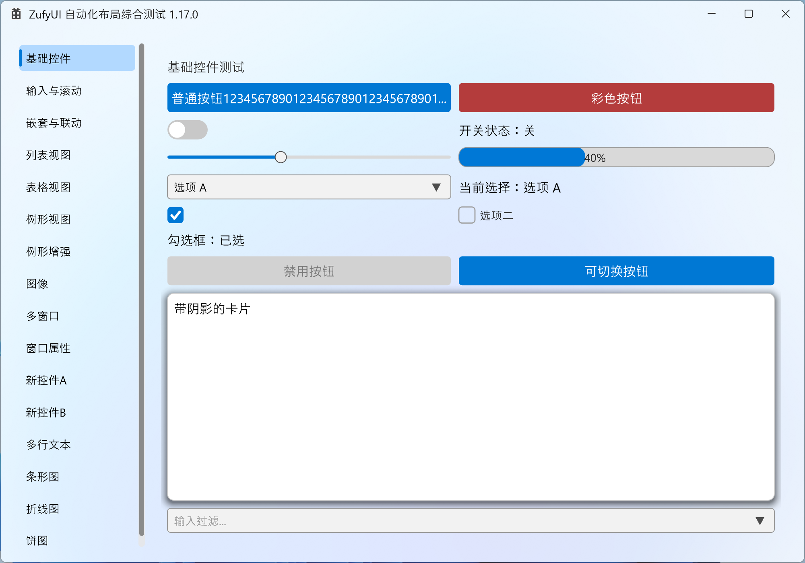
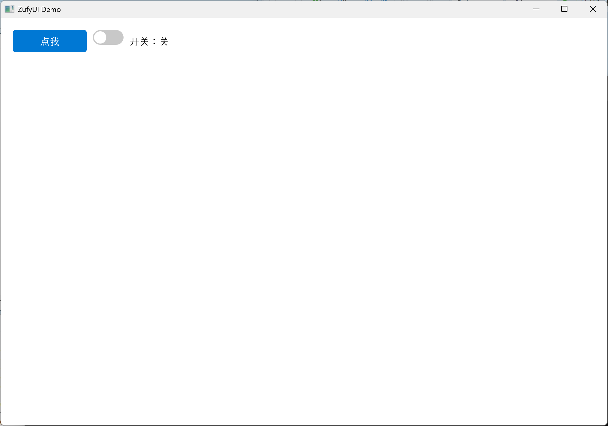
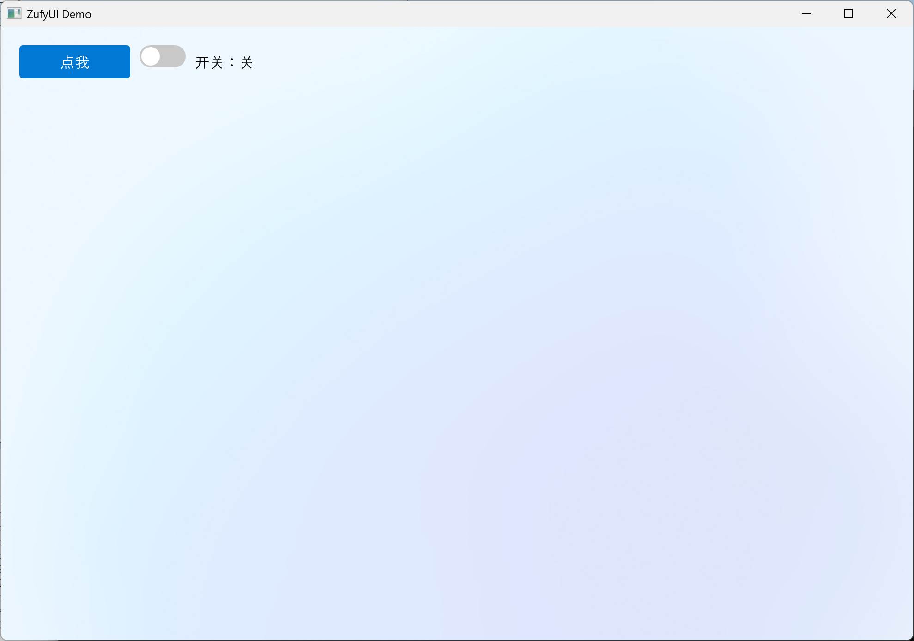
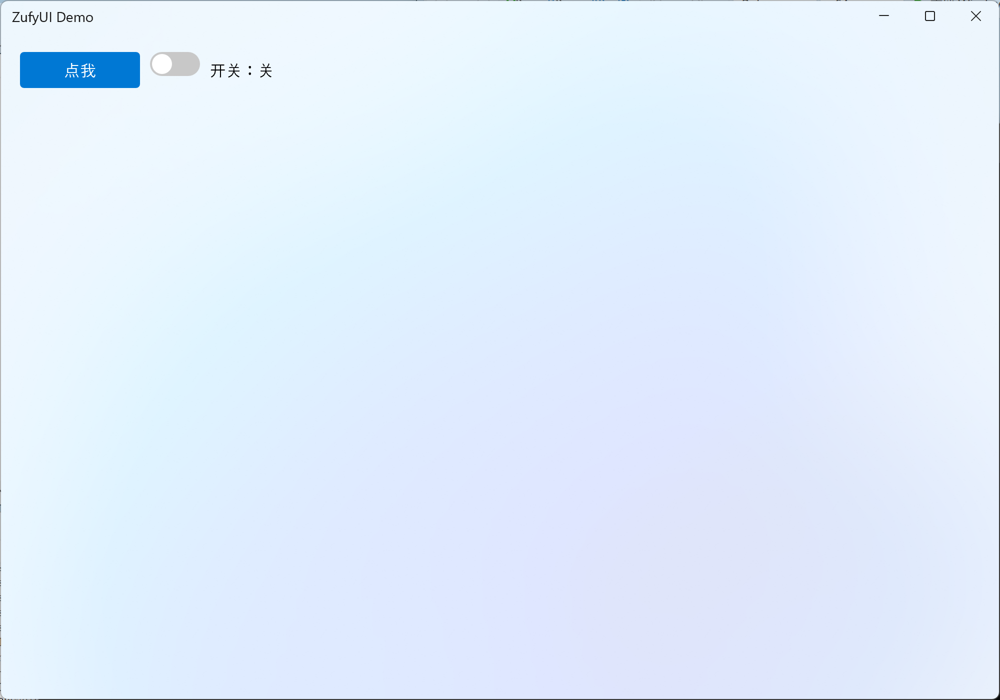

# ZufyUI
**A few MB light, native-composition fast.** A header-only, zero-dependency C++20 Windows UI framework built directly on Direct2D 1.1 + DirectComposition.
- **No Qt packaging baggage, no Electron memory tax.** A handful of headers; `#include` and go — application projects link no third-party libraries.
- **WinUI 3 / Fluent Design language.** Acrylic / Mica, rounded corners, layered shadows, accent colour and motion for a native Windows 11 look.
- **Embed native content.** `HwndView` hosts WebView2, cameras, third-party controls and even out-of-process HWNDs inside the layout (cross-process, region-clipped, moves with the window).
> Built for Windows-only tools, industrial HMI/SCADA, desktop clients that need WebView2 or a video window, and teams escaping MFC/Qt size and licensing.
**👉 [Download the release demo](https://github.com/zhc9968/ZufyUI/releases)** · [Gitee Releases](https://gitee.com/zhc9968/ZufyUI/releases) · [Online API](https://zhc9968.github.io/ZufyUI/docs/API.en.html) · [简体中文](README.md) · MIT

> Experimental: the independent render thread (`ZUFYUI_RENDER_THREAD`) is off by default; see "Experimental feature" at the end. The default single-threaded path is stable.
## Quick start
> Goal: **get your first window on screen within 10 minutes** and know which chapter to read next. Follow the steps below.
**Step 0: setup (header-only, zero build config)**
- Add the directory containing `ZufyUI.h`, `ZufyUIWidgets.h`, `ZDataViewer.h`, `ZufyUICharts.h`, `ZufyUIWindowTool.h`, `ZufyUIDragDrop.h` to your **include path**; **nothing to compile**, no third-party deps.
- All required system libs are auto-linked via `#pragma comment(lib, ...)` (complete list under Requirements).
- GUI entry point: **`wWinMain` + `/SUBSYSTEM:WINDOWS`**.
- If your environment dislikes BOM / non-ASCII sources, run the [ASCII-only export](#ascii-only-export) and use the headers in `dist/ascii`.
- **⚠ Entry point pitfall**: if you insist on `int main()`, set `/SUBSYSTEM:CONSOLE`, or add `#pragma comment(linker, "/SUBSYSTEM:WINDOWS /ENTRY:mainCRTStartup")`, otherwise the linker won't find an entry point.
**Step 1: minimal window + a button + a toggle**
```cpp
#include "ZufyUIWidgets.h"
using namespace ZufyUI;
int WINAPI wWinMain(HINSTANCE, HINSTANCE, LPWSTR, int) {
Window win;
if (!win.Create(1000, 700, L"ZufyUI Demo"))
return 1;
auto root = win.GetRootColumnBox();
root->SetSpacing(10);
auto row = std::make_shared<RowBox>();
row->SetSpacing(10);
auto btn = std::make_shared<Button>(L"Click me");
btn->Connect(btn->Clicked, []() {
MessageBoxW(nullptr, L"Hello ZufyUI!", L"Info", MB_OK);
});
auto toggle = std::make_shared<ToggleSwitch>(false);
auto state = std::make_shared<Label>(L"Switch: off");
toggle->Connect(toggle->Toggled, [state](bool on) {
state->SetText(on ? L"Switch: on" : L"Switch: off");
});
row->AddChild(btn);
row->AddChild(toggle);
row->AddChild(state);
root->AddChild(row);
win.Run();
return 0;
}
```
Key points (what each step does):
- `Window::Create` creates the window, initializes Direct2D, applies the background, and generates a default root `ColumnBox` (margin 20, spacing 10);
- Create controls with `std::make_shared<T>()` and attach them with `AddChild`; **a parent owns its children via `shared_ptr`**;
- Bind events with `Connect(signal, slot)`; connections auto-disconnect when the receiver (control/window) is destroyed; use `ConnectWeak` when the receiver needs weak lifetime;
- `win.Run()` enters the message loop; all windows/controls live on the **same UI thread**.
- **⚠ Units**: coordinates/sizes are **DIP** (not physical pixels); the framework handles DPI snapping, so you don't.
Result (that exact code above):

**Steps 2 / 3: change the background, change the title bar**
**Step 2: change the background.** Only three backdrop layers exist — `None / Acrylic / Mica` — with an ARGB tint composited on top:
```cpp
win.SetBackdrop(Backdrop::Mica, 0x00000000); // Mica + fully transparent tint
```

**Step 3: a custom title bar.** Swap the title bar (plus switch to Mica so it stands out):
```cpp
#include "ZufyUIWindowTool.h" // DefaultTitleBar lives here
auto bar = std::make_shared<DefaultTitleBar>();
win.SetCustomTitleBar(bar);
win.SetBackdrop(Backdrop::Mica, 0x00000000); // also switch to Mica
```

**Step 4: what to read next**
- Layout & controls overview: [API Reference · Layout / Basic controls](https://zhc9968.github.io/ZufyUI/docs/API.en.html)
- Data UI (list / table / tree): the "Data views" chapter
- Charts: the "Charts" chapter (`BarChart` / `LineChart` / `PieChart`)
- Window extras (title bar / tray / system dialogs): the "Window extras" chapter
- Accessibility & debug/automation: the "Accessibility & Debug Channel" chapter
**Three things to always remember**
1. **DIP**: all sizes/coordinates are DIP — no manual DPI math.
2. **`shared_ptr` = ownership**: own controls with `make_shared`, attach with `AddChild`; dropping the only `shared_ptr` destroys it.
3. **Entry point / subsystem**: `wWinMain` + `/SUBSYSTEM:WINDOWS` (or the "Entry point pitfall" above).
## Feature overview
> Every major capability currently implemented, grouped by module. API details, defaults and pitfalls are in the [online API reference](https://zhc9968.github.io/ZufyUI/docs/API.en.html) ([source](docs/src/API.en.md)); per-item changes are in [CHANGELOG.en.md](CHANGELOG.en.md).
<details>
<summary>Show the full module list (layout / controls / data views / charts / theme / native embedding ...)</summary>
### Framework & rendering
- **Header-only / zero third-party dependencies**: just include the `.h` files — no library `.cpp` to build, no Qt / MFC / third-party dependency; all system libraries are linked via in-library `#pragma comment(lib, ...)` (complete list under Requirements).
- **Direct2D 1.1 + DirectWrite + DirectComposition**: DXGI flip-model composition; the main window uses `WS_EX_NOREDIRECTIONBITMAP`; geometry, text and images are drawn on the GPU.
- **Backdrops**: none / **Acrylic** (several presets, with adjustable blur/saturation/brightness/noise) / **Mica**, with optional `tint`; window corners `Default / Square / Round / RoundSmall`.
- **Per-element offscreen caching**: on by default, can be disabled per element; bleed keeps shadows/borders from being clipped; `ReleaseDeviceResourcesRecursive()` releases a whole subtree; automatic recovery after device loss.
- **High DPI**: Per-Monitor V2, `WM_DPICHANGED`, DIP coordinates, `Snap()` to physical pixels; cursor/hover/IME candidate geometry use the same scale.
- **Frame-rate limit**: per-window `SetFrameRateLimit` plus a global default.
- **Render thread**: single UI thread by default; the independent render thread (`ZUFYUI_RENDER_THREAD`) is experimental (off by default, unstable, not recommended).
- **Built-in diagnostics**: frame stats, repaint / layout / cache / draw TopN, unified `detail::Log`, `UIZSignals::Error`.
### Layout
- **Three layout containers**: `ColumnBox` (vertical), `RowBox` (horizontal), `GridLayout` (rows/columns, row/column spans, row/column stretch weights, alignment).
- **Sizing semantics**: explicit `SetWidth/Height`, `min/max`, `SetFillWidth/SetFillHeight`, horizontal/vertical stretch weights (distribute leftover), `margin` / `padding` / `spacing`; an explicit Grid width/height also constrains cell measurement.
- **Overflow scrolls**: content is **not shrunk** when space runs out — the outer `ScrollViewer` scrolls (desktop-UI semantics).
- **Dynamic layout**: `InvalidateLayout()` bubbles, Measure/Arrange dirty flags, visibility changes re-layout automatically; `LayoutParticipation` lets an element opt out of layout.
- **Container controls**: `Card` (rounded corners/border/hover/optional shadow), `LayoutHost` (single-slot), `Page` (`SetScrollableContent` makes a whole page scrollable in one line), `PageHost` (page transitions: four directions, three easings, configurable duration; delayed hidden-page cache release).
- **Clipping**: `SetClipRect` / `GetClipRect`; `ScrollViewer` viewport and nested ancestor clips compose.
### Basic controls
- **Label**: multi-line/wrap/ellipsis/max lines, horizontal & vertical alignment, font and colours, inline child controls, leading icon, image + `SetImageFit`, automatic tooltip when elided.
- **Button**: text/icon, hover/pressed/disabled, `Clicked`; auto-widens to its text (can be disabled); rich/arbitrary content (`GetLabel()->AddChild` / `SetContent`); drop 2x2 (`SetDropWriteBack` x `SetDropOpenOnClick`, single-select menu, `DropSelected` / `DropMenuOpened`); `CaptionButton` for minimize/maximize/close/Pin.
- **TextBox**: placeholder, password mode, max length, read-only, selection/caret, copy/cut/paste, undo, IME composition & candidate positioning, UTF-16 surrogate pairs, drag & drop, shift+click.
- **TextEdit**: multi-line editor / read-only viewer, standard undo/redo (restores selection and caret), Tab indentation, scrolling, read-only rich text `TextRun`.
- **ComboBox**: editable, filtering (`SetFilterEnabled`), source vs visible index, max visible items, disabled items, keyboard navigation, chevron expand animation, lazily connected global `DrawOverlay`.
- **CheckBox / RadioButton / RadioGroup**: checked, indeterminate, labels, radio groups, button style.
- **ToggleSwitch**: click toggles on mouse-up; press-drag left/right makes the knob follow the pointer and commits by drag progress; duration-driven ease-in-out (0.18 s default); mouse, keyboard and code paths behave consistently.
- **Slider**: range/step/snap, track/fill/thumb colours, dragging, UIA `RangeValue`; normal dragging is immediate, click/snap eases the display value; `GetDisplayValue()` exposes the animated value.
- **NumberBox**: range/step/decimals, invalid-text error state, mouse-wheel adjustment, step/clear buttons (fire on press), `ResetToDefault`.
- **ProgressBar / ProgressRing**: determinate/indeterminate, percentage text, value animation, theme colours.
- **ScrollViewer / ScrollBar**: horizontal/vertical scrolling, smooth scrolling, scroll chaining (hands the wheel back to the parent at the edge), scrollbar `Auto/Visible/Hidden`, content margin, two-pass measure, lazy idle shrinking.
- **SplitView**: draggable split, edge-threshold collapse/expand (overlay hint + easing), collapse button, minimum extent.
- **Drawer**: left/right/top/bottom; Overlay (rounded scrim) / Push (content yields) / Permanent (always open); rounded panel, border, real shadow; Esc/outside-click dismiss (`Window::AddKeyHandler`).
- **TabView**: tabs can be any `Label` (with icon), closable tabs + `TabCloseRequested`, animated indicator, internal `PageHost` transition.
- **Expander**: collapsible card (title/subtitle/icon), smoothstep height animation, rotating arrow, header hover highlight; content is pre-measured before the first expand, survives collapse/re-expand, and clips with bleed.
- **SettingsList**: settings rows (title/description/right-hand control).
- **MenuBar / StatusBar**: VS-style top menu bar, bottom left/right status panels (icon + text).
- **ToolTip / ContextMenu**: automatic tooltip for elided text; element-level and window-level context menus (fixed or factory-built).
### Images & icons
- **Image / ImageManager**: load from file / memory / resource / `HICON` (WIC decode), cached per render device and rebuilt after device loss.
- **Image display**: `Label::SetImage` + `SetImageFit` (fully visible / uniform scale), draggable out to Explorer; the same `Image` can be used for window and tray icons.
- **FontIcon / Icon**: icon-font glyph control with a built-in `Icon` enum, configurable size and colour.
### Data views
- **ListView**: viewport virtualization + Label pooling; `SelectionMode` (Single / Extended / Multi / None) and a multi-selection signal; checkboxes; rich items via `AddItemWidget`; hide/filter/sort (source index vs visible order); `ScrollToItem`; empty-state text; row/item tooltips; double-click signal.
- **TableView**: multiple columns, header (visibility/height/colours), cell colours and rich cells, checkboxes, row height/column width, scrolling; cell double-click signal.
- **TreeView**: hierarchy, multiple columns, expand/collapse, checkboxes (recursive/shallow/three-state `Unchecked / PartiallyChecked / Checked`), filter/search, sort, `ScrollToNode`, node background/tooltip, `BeginUpdate/EndUpdate` batching, default expand depth, double-click signal.
- **Shared**: theme integration, font/colour customisation, selection signals, `RenderGuard()` serialization with the render thread, release of pooled/rich/cell Labels.
### Charts
- **ChartBase**: multiple series/categories, palette, automatic or fixed value-axis range, tick count/step, value format (decimals/prefix/suffix), horizontal/vertical grid, legend, value/category labels, sticky axes, horizontal/vertical reference lines, entrance animation, pan/zoom, scrollbars, selected category.
- **BarChart**: vertical/horizontal, grouped/stacked/percent-stacked/overlapped, bar/group gaps, rounded corners, outline, per-bar colours.
- **LineChart**: lines, smoothing, dashed lines, markers (shape/size), area fill (alpha), multiple series.
- **PieChart**: pie/donut (`SetDonut`), start angle/clockwise/slice gap, label modes, legend, zoom, slice hit-testing.
- All charts honour `SetFillWidth/Height`; without constraints they fall back to `420×260` (`320×260` for pie).
### Menus & popups
- **Menu / MenuItem / MenuWindow**: normal items, check items, radio check items, separators, submenus, callback/toggle callbacks, `onClosed`; separate top-level windows that are not clipped by the main window and may extend outside it.
- **MenuBar**: click to open, hover only highlights, stays pressed while open, can overlay the custom title bar.
- **MessageBox**: built-in modal message box (button combinations, localized title).
- **Element-level/window-level context menus**, **automatic tooltips**.
### Window & system integration
- **Window**: create/show/hide/topmost/raise/flash, title/icon, rounded corners, minimum size, position/size, resizable, minimize/maximize/restore, content opacity, `Run` / `RunModal`.
- **Custom title bar**: `TitleBar` / `DefaultTitleBar` / `CaptionButton` (minimize/maximize/close/Pin), title-bar colours, title text vs menu exclusivity, drag regions, Win11 Snap Layouts.
- **Multi-window**: `Application` (`CreateWindow`, owner/owned, `Run`, `Quit`, `CloseAllWindows`, `WindowCount`); owned-window minimize policy (None / Hide / DisableMinimize).
- **Timer**: window/framework timers with a `Tick` signal, destroyed with the window.
- **Taskbar**: progress (normal/error/paused/indeterminate), overlay icon, thumbnail toolbar buttons, jump lists.
- **Tray**: icon/tooltip/menu/badge/balloon notifications (custom icon and click signals).
- **App identity**: `AppInfo` / AUMID registration, app icons (HICON/resource/`Image`).
- **System dialogs**: `FileDialog` (open/save/multi-select/filters), `ColorDialog`.
- **Drag & drop**: OLE drop in/out with text/files/custom formats, element-level and whole-window (`SetDropTargetEnabled`), drag out to Explorer, drag image.
- **Native HWND host**: `HwndView` (`ZufyUIHwndView.h`) embeds WebView2 / camera / third-party controls / out-of-process windows into the layout; top-level owned popup host, `WS_CHILD` re-parenting (cross-process), `SetWindowRgn` region clipping, `SetObscured`, `SetOnBoundsChanged`, `SetFill*`.
- **External visuals**: `Window::CreateExternalVisual` / `SetExternalVisualBounds` / `RemoveExternalVisual` (WinRT `ContainerVisual`, for WebView2 CompositionController / video); `AddOverlaySync` / `SyncOverlays` for unified overlay sync.
### Theming
- **Theme / ThemeRole / ThemeManager**: semantic palette; Light / Dark / HighContrast; app-level and window-level switching.
- **Follow system**: light/dark + accent colour, listening to `WM_SETTINGCHANGE` / `WM_THEMECHANGED` / `WM_DWMCOLORIZATIONCOLORCHANGED` / `WM_SYSCOLORCHANGE`.
- **Explicit colours win**: `MarkUserColor` prevents later theme overrides; `ThemeManager::Map` remaps colour differences.
- **RAII hooks**: `RegisterHook` / `RegisterSubtreeApplier` return a `HookHandle` (auto-disconnect on destruction); page/tab switches re-apply the theme to the visible subtree.
### Input, text & accessibility
- **Input**: hover/press/capture, mouse wheel, double-click (data views/tray), keyboard focus, Tab / Shift+Tab focus navigation, Enter/Space, Esc closes popups, Shift selection.
- **Text**: UTF-16 surrogate pairs, IME composition and candidate positioning, reset on focus loss, clipboard, undo/redo, drag selection.
- **UIA accessibility**: `AutomationId` (automatic/explicit, unique per window), role-driven Patterns, `ElementProviderFromPoint` (children before parents), `RangeValue`, etc.; provider cache/context lifetime is synchronized with COM callback threads.
- **Debug/automation channel**: `SetDebugEnabled`, commands 1–23 (windows/element tree/text/focus/highlight/stats/theme), unified logging, `UIZSignals::Error`, companion `ZufyUIDebugger`.
### Animation
- `detail::EaseOutCubic` / `EaseInOutCubic`, duration-driven, exact end.
- Hover, expand, indicator, page transitions, smooth scrolling, switch, progress, slider, SplitView collapse/expand.
- Animated-element set management: removed on destruction to avoid dangling entries.
### Signals & threading
- **ZSignal / Connection / ConnectionGroup**: `Connect` auto-disconnect, snapshot `Fire`, exception-safe.
- **Three dispatch strategies**: current thread / new thread / UI thread.
- **Global signals**: `UIZSignals::ThemeChanged` / `ThemeReapply` / `LayoutInvalidated` / `DrawOverlay` / `ElementCaptureRequest` / `Error`, etc.
- **Serialization**: `RenderGuard()` serializes data mutation with the render thread; clear lifetime conventions for windows/elements and device-resource release.
### Fluent construction DSL (optional)
- `Ref<T>`: `with / on / add / apply`; `Make / Wrap / Col / Row / Grid`; `Cell(row,col,...)`.
- All short factories use a `Z` prefix (`ZLbl` / `ZBtn` / `ZSlider` / `ZCard` / `ZPage` ...), so they no longer collide with class names; SFINAE-gated sugar for size/weights/colours/spacing/alignment/data views/menus.
- `dsl::ZApp()` / `WindowApp`: fluent configuration, `hidden`, window signals, automatic `Show()`, `run()`.
- `tests/zufyui_tests.cpp`: 175 compile-time + runtime assertions; no visible window (the UIThread cancellation test uses a hidden dispatcher).
### Engineering, tools & demo
- Visual Studio solution/project; any toolset, C++20; x64 / x86.
- `tools/build.ps1` (BOM → build demo + Debugger → run self-tests), `ensure_bom.ps1`, `run_tests.ps1`, `check_api_parity.py`, `colorscan.py`.
- `ZufyUIDebugger`: out-of-process debugger (UIA + debug channel).
- `ZufyUI.cpp`: 26-page demo (layout/controls/data views/charts/theme/multi-window/native HWND/out-of-process producer/DSL/all-controls overview…), also serving as a smoke test.
- Bilingual 23-chapter docs + pitfall index + full CHANGELOG.
</details>
> Keywords: WinUI 3, Fluent Design, Windows 11, Win32, Direct2D, DirectComposition, C++20, header-only, custom-drawn UI.
## Requirements
| Item | Requirement |
| --- | --- |
| Operating system | Windows 10 / 11 |
| Compiler | Visual Studio (**any toolset works**; requires **C++20** or later) |
| Windows SDK | 10.0 or later |
| Source encoding | Repository sources are **UTF-8 with BOM** (Chinese comments / wide literals); use the [ASCII-only export](#ascii-only-export) below when BOM-free sources are required |
| Runtime libraries | All system-provided (full list below); no additional installation required |
| Third-party dependencies | None |
> **Linked system libraries (complete list)**:
> - MSVC defaults: `kernel32` / `user32` / `gdi32` / `winspool` / `comdlg32` / `advapi32` / `shell32` / `ole32` / `oleaut32` / `uuid` / `odbccp32`
> - In-library `#pragma comment(lib, ...)`: `comctl32` / `imm32` / `winmm` / `d2d1` / `dwrite` / `dwmapi` / `d3d11` / `dxgi` / `dcomp` / `dxguid` / `shlwapi` / `windowscodecs` / `uiautomationcore` / `windowsapp`
>
> All ship with Windows; the library links them automatically, so application projects need no extra `#pragma` or `.lib`.
## Build
1. Open the solution `ZufyUI.slnx` with Visual Studio;
2. Select the **Release | x64** configuration;
3. Build the solution (Build Solution);
4. The output is located at `x64\Release\ZufyUI.exe`; run it directly.
Command-line build (requires MSBuild on PATH):
```bash
msbuild ZufyUI.slnx /p:Configuration=Release /p:Platform=x64
```
> `ZufyUI.cpp` is a comprehensive demo program (left-side navigation + multiple test pages) that also serves as the framework's "smoke test". When building your own application, you only need to include the headers and write your own `WinMain`.
### ASCII-only export
If your environment dislikes UTF-8 BOMs or non-ASCII sources (CI, older toolchains, code review, some editors), generate an ASCII-only copy:
```powershell
python tools/export_ascii.py --force
```
- Output goes to `dist/ascii/` (already excluded by `.gitignore`, never committed).
- Every source file is plain ASCII with no BOM; non-ASCII comments become spaces.
- Non-ASCII string/font text is preserved with `\uXXXX` (wide) or UTF-8 octal escapes (narrow), so runtime text is unchanged.
- Add translations in `tools/ascii_map.json`; `--strings ascii` replaces unmapped text with `?`.
- See the generated `README.md` and `EXPORT_REPORT.txt` for details.
## Project structure
```text
ZufyUI/
├── ZufyUI.h # Core: types / signals & slots / fonts / elements / layout / menus / window / theme
├── ZufyUIWidgets.h # Basic controls: Label / Button / TextBox / TextEdit / ComboBox / ToggleSwitch / ScrollViewer / ProgressBar / Slider / MenuBar / StatusBar …
├── ZDataViewer.h # Data views: ListView / TableView / TreeView
├── ZufyUICharts.h # Charts: ChartBase / BarChart / LineChart / PieChart
├── ZufyUIAcrylic.h # DComp composition effects + acrylic / mica recipes (included by ZufyUI.h)
├── ZufyUIImages.h # Image / ImageManager (image loading and device cache)
├── ZufyUIIcons.h # FontIcon glyph control
├── ZufyUIWindowTool.h # Tray / custom title bar / accessibility (UIA) / system dialogs / debug channel
├── ZufyUIHwndView.h # Native HWND host (HwndView) for WebView2 / camera / third-party windows
├── ZufyUIDragDrop.h # Drag & drop: DragData / DragDataBuilder / Window::BeginDrag / element hooks
├── ZufyUIDsl.h # Optional: fluent construction DSL (Ref / ZCol / ZRow / ZGrid / Z-prefixed factories / dsl::ZApp)
├── ZufyUI.cpp # Demo program entry point (wWinMain)
├── ZufyUIDebugger/ # Out-of-process debugger (UIA + debug channel)
├── ZufyUI.slnx # Solution
├── ZufyUI.vcxproj # Project file
├── AGENTS.md # Development principles (incl. "find the root cause before fixing any bug")
├── HANDOFF.md # Handoff notes (hard rules / architecture / pitfalls / release flow)
├── docs/
│ ├── README.md # Docs entry (online links + source location)
│ ├── src/
│ │ ├── API.md # Full API documentation (Chinese)
│ │ └── API.en.md # Full API documentation (English)
│ └── pitfalls.md # Pitfall index
├── tests/
│ └── zufyui_tests.cpp # ZufyUI self-test (compile-time + runtime assertions, no window)
└── tools/
├── build.ps1 # One-shot build: fix BOM → build demo + Debugger → run self-tests
├── ensure_bom.ps1 # BOM guard (restores UTF-8 BOM before building)
├── run_tests.ps1 # Compile and run the ZufyUI self-test
├── check_api_parity.py # zh/en API code-block parity check
├── build_docs.py # Build API HTML (version + icon; calls generic md2html)
├── make_icon.py # Generate docs/icon.{png,ico,svg} (draft icon)
├── export_ascii.py # Generate an ASCII-only distribution (dist/ascii)
├── ascii_map.json # ASCII export string/font translation map
├── vs_tools.ps1 # Auto-detect VS / MSBuild (no hard-coded paths)
└── colorscan.py # Hard-coded colour audit
```
## Version history
> Current version: **1.26.0** (source of truth: `ZUFYUI_VERSION_STRING` in `ZufyUI.h`).
> Only "roughly what changed/fixed" (noun level); full per-item details are in [CHANGELOG.en.md](CHANGELOG.en.md).
- **1.26.0**: layout measurement contract (Grid/Row/Column/Card/Page/ScrollViewer, explicit sizing and Fill); ToggleSwitch press-drag; Slider immediate drag/snap easing; Expander first-expand and collapse/re-expand fixes; UIA provider lifetime/CFG crash fix; all-controls overlay page and 280 self-tests.
- **1.25.0**: `Drawer` side panel (Overlay / Push / Permanent, four sides, rounded scrim, panel shadow, Esc); `Window::AddKeyHandler`; signal-focused tests and test rename; `ScrollViewer` bleed follows content bleed.
- **1.24.0**: signal lifetime (atomic liveness, queued-task cancellation, non-movable `ZSignal`); receiver context (`ConnectionOwner`, `UIElement/Window::Connect`); `ConnectWeak`; member-function pointers now use free `Connect`.
- **1.23.3**: Button rich content / custom content + drop 2x2 (write-back x open-menu); `SetBackdrop` no longer covers Acrylic/Mica by default; ListView row-height division fix.
- **1.23.2**: Debug builds now use `/bigobj` (x64/x86); full Release/Debug build matrix passes.
- **1.23.1**: `PageHost` measures its pages; README/docs layering; Debugger in-repo; build scripts without absolute paths; ASCII export; WinUI 3 / Fluent Design icon and docs.
- **1.23.0**: `HwndView` native window host; `Window` external visual attachment; overlay sync/performance; `NumberBox` error state; data-view fill.
- **1.22.1**: layout overflow/alignment; IME/surrogate pairs; accessibility id/hit; focus-ring theme; pch/MarkUserColor.
- **1.22.0**: API debt (default-arg overloads, `make_*`, `SetScrollableContent`, `HookHandle`); MessageBox first click; ScrollViewer scroll chaining; SplitView expand easing.
- **1.21.0**: SplitView collapse; render/layout/chart fixes; demo home/menu/status bar; unified animation.
- **1.20.0**: DSL `root`/`add`/`Cell`/`apply`/`Wrap`; `WindowApp`; `build.ps1`; DSL tests.
- **1.19.7**: chart scrollbars; NumberBox wheel; anim-set dangling; `Menu::ShowAt`; layout spacing; data-view release; IME; `TODO.md`.
- **1.19.6**: ListView checkbox hit; Label wrap width; single-source version.
- **1.19.5**: DSL `App`/`WindowApp` + SFINAE sugar + chart composition.
- **1.19.4**: DSL chaining; CheckBox label clipping; data-view cache signature; chart fill fallback.
- **1.19.3**: theme system + follow system + explicit instance colours.
- **1.19.2**: MenuBar / StatusBar; Menu `onClosed`.
- **1.19.1**: TextEdit undo/redo; drag & drop; ScrollViewer viewport measure; `Label::SetImageFit`.
- **1.19.0**: drag & drop; `Expander`/`SettingsList`; ComboBox arrow; charts.
- **1.18.1**: docs/screenshots update.
- **1.18.0**: charts `ZufyUICharts.h`; `TextEdit`; `PageHost` deferred release; docs rewrite.
- **1.17.0**: UIA; debug channel; layout weights; Label/Button auto ToolTip; TreeView bg/scroll; title-bar Pin.
- **1.16.0**: render thread off by default; system dialogs; `UIZSignals::Error`; cursor/hover/first-column fixes.
- **1.15.0**: data-view virtualization; cross-thread cleanup; ComboBox source index.
> Older versions (≤ 1.14) are in [CHANGELOG.en.md](CHANGELOG.en.md).
## Roadmap
If you need something (a control, platform integration, performance/compatibility), please open an [issue](https://github.com/zhc9968/ZufyUI/issues) ([Gitee](https://gitee.com/zhc9968/ZufyUI/issues)); the author usually responds within 3–4 days.
## Documentation
- Repository: GitHub <https://github.com/zhc9968/ZufyUI> · Gitee <https://gitee.com/zhc9968/ZufyUI>
- Online documentation: <https://zhc9968.github.io/ZufyUI/>
- API Reference (English, 23 chapters): <https://zhc9968.github.io/ZufyUI/docs/API.en.html>
- API 参考（中文）: <https://zhc9968.github.io/ZufyUI/docs/API.html>
- Sources: [docs/src/API.en.md](docs/src/API.en.md) / [docs/src/API.md](docs/src/API.md) (entry: [docs/README.md](docs/README.md))
## About
ZufyUI was originally named `ZUI` (to avoid clashes with other projects of the same name).
## Experimental feature
> ⚠️ **The independent render thread (compile switch `ZUFYUI_RENDER_THREAD`) is experimental: off by default, unstable, buggy, and not recommended.** The default single-threaded path is stable; see the "Independent render thread" section in the API reference.
## License
This project is licensed under the **MIT** License; see [LICENSE](LICENSE) for details.
ZufyUI
A few MB light, native-composition fast. A header-only, zero-dependency C++20 Windows UI framework built directly on Direct2D 1.1 + DirectComposition.
- No Qt packaging baggage, no Electron memory tax. A handful of headers;
#includeand go — application projects link no third-party libraries. - WinUI 3 / Fluent Design language. Acrylic / Mica, rounded corners, layered shadows, accent colour and motion for a native Windows 11 look.
- Embed native content.
HwndViewhosts WebView2, cameras, third-party controls and even out-of-process HWNDs inside the layout (cross-process, region-clipped, moves with the window).
Built for Windows-only tools, industrial HMI/SCADA, desktop clients that need WebView2 or a video window, and teams escaping MFC/Qt size and licensing.
👉 Download the release demo · Gitee Releases · Online API · 简体中文 · MIT

Experimental: the independent render thread (
ZUFYUI_RENDER_THREAD) is off by default; see "Experimental feature" at the end. The default single-threaded path is stable.
Quick start
Goal: get your first window on screen within 10 minutes and know which chapter to read next. Follow the steps below.
Step 0: setup (header-only, zero build config)
- Add the directory containing ZufyUI.h, ZufyUIWidgets.h, ZDataViewer.h, ZufyUICharts.h, ZufyUIWindowTool.h, ZufyUIDragDrop.h to your include path; nothing to compile, no third-party deps.
- All required system libs are auto-linked via #pragma comment(lib, ...) (complete list under Requirements).
- GUI entry point: wWinMain + /SUBSYSTEM:WINDOWS.
- If your environment dislikes BOM / non-ASCII sources, run the ASCII-only export and use the headers in dist/ascii.
- ⚠ Entry point pitfall: if you insist on int main(), set /SUBSYSTEM:CONSOLE, or add #pragma comment(linker, "/SUBSYSTEM:WINDOWS /ENTRY:mainCRTStartup"), otherwise the linker won't find an entry point.
Step 1: minimal window + a button + a toggle
#include "ZufyUIWidgets.h"
using namespace ZufyUI;
int WINAPI wWinMain(HINSTANCE, HINSTANCE, LPWSTR, int) {
Window win;
if (!win.Create(1000, 700, L"ZufyUI Demo"))
return 1;
auto root = win.GetRootColumnBox();
root->SetSpacing(10);
auto row = std::make_shared<RowBox>();
row->SetSpacing(10);
auto btn = std::make_shared<Button>(L"Click me");
btn->Connect(btn->Clicked, []() {
MessageBoxW(nullptr, L"Hello ZufyUI!", L"Info", MB_OK);
});
auto toggle = std::make_shared<ToggleSwitch>(false);
auto state = std::make_shared<Label>(L"Switch: off");
toggle->Connect(toggle->Toggled, [state](bool on) {
state->SetText(on ? L"Switch: on" : L"Switch: off");
});
row->AddChild(btn);
row->AddChild(toggle);
row->AddChild(state);
root->AddChild(row);
win.Run();
return 0;
}
Key points (what each step does):
Window::Createcreates the window, initializes Direct2D, applies the background, and generates a default rootColumnBox(margin 20, spacing 10);- Create controls with
std::make_shared<T>()and attach them withAddChild; a parent owns its children viashared_ptr; - Bind events with
Connect(signal, slot); connections auto-disconnect when the receiver (control/window) is destroyed; useConnectWeakwhen the receiver needs weak lifetime; win.Run()enters the message loop; all windows/controls live on the same UI thread.- ⚠ Units: coordinates/sizes are DIP (not physical pixels); the framework handles DPI snapping, so you don't.
Result (that exact code above):

Steps 2 / 3: change the background, change the title bar
Step 2: change the background. Only three backdrop layers exist — None / Acrylic / Mica — with an ARGB tint composited on top:
win.SetBackdrop(Backdrop::Mica, 0x00000000); // Mica + fully transparent tint

Step 3: a custom title bar. Swap the title bar (plus switch to Mica so it stands out):
#include "ZufyUIWindowTool.h" // DefaultTitleBar lives here
auto bar = std::make_shared<DefaultTitleBar>();
win.SetCustomTitleBar(bar);
win.SetBackdrop(Backdrop::Mica, 0x00000000); // also switch to Mica

Step 4: what to read next
- Layout & controls overview: API Reference · Layout / Basic controls
- Data UI (list / table / tree): the "Data views" chapter
- Charts: the "Charts" chapter (BarChart / LineChart / PieChart)
- Window extras (title bar / tray / system dialogs): the "Window extras" chapter
- Accessibility & debug/automation: the "Accessibility & Debug Channel" chapter
Three things to always remember
1. DIP: all sizes/coordinates are DIP — no manual DPI math.
2. shared_ptr = ownership: own controls with make_shared, attach with AddChild; dropping the only shared_ptr destroys it.
3. Entry point / subsystem: wWinMain + /SUBSYSTEM:WINDOWS (or the "Entry point pitfall" above).
Feature overview
Every major capability currently implemented, grouped by module. API details, defaults and pitfalls are in the online API reference (source); per-item changes are in CHANGELOG.en.md.
Show the full module list (layout / controls / data views / charts / theme / native embedding ...)
### Framework & rendering - **Header-only / zero third-party dependencies**: just include the `.h` files — no library `.cpp` to build, no Qt / MFC / third-party dependency; all system libraries are linked via in-library `#pragma comment(lib, ...)` (complete list under Requirements). - **Direct2D 1.1 + DirectWrite + DirectComposition**: DXGI flip-model composition; the main window uses `WS_EX_NOREDIRECTIONBITMAP`; geometry, text and images are drawn on the GPU. - **Backdrops**: none / **Acrylic** (several presets, with adjustable blur/saturation/brightness/noise) / **Mica**, with optional `tint`; window corners `Default / Square / Round / RoundSmall`. - **Per-element offscreen caching**: on by default, can be disabled per element; bleed keeps shadows/borders from being clipped; `ReleaseDeviceResourcesRecursive()` releases a whole subtree; automatic recovery after device loss. - **High DPI**: Per-Monitor V2, `WM_DPICHANGED`, DIP coordinates, `Snap()` to physical pixels; cursor/hover/IME candidate geometry use the same scale. - **Frame-rate limit**: per-window `SetFrameRateLimit` plus a global default. - **Render thread**: single UI thread by default; the independent render thread (`ZUFYUI_RENDER_THREAD`) is experimental (off by default, unstable, not recommended). - **Built-in diagnostics**: frame stats, repaint / layout / cache / draw TopN, unified `detail::Log`, `UIZSignals::Error`. ### Layout - **Three layout containers**: `ColumnBox` (vertical), `RowBox` (horizontal), `GridLayout` (rows/columns, row/column spans, row/column stretch weights, alignment). - **Sizing semantics**: explicit `SetWidth/Height`, `min/max`, `SetFillWidth/SetFillHeight`, horizontal/vertical stretch weights (distribute leftover), `margin` / `padding` / `spacing`; an explicit Grid width/height also constrains cell measurement. - **Overflow scrolls**: content is **not shrunk** when space runs out — the outer `ScrollViewer` scrolls (desktop-UI semantics). - **Dynamic layout**: `InvalidateLayout()` bubbles, Measure/Arrange dirty flags, visibility changes re-layout automatically; `LayoutParticipation` lets an element opt out of layout. - **Container controls**: `Card` (rounded corners/border/hover/optional shadow), `LayoutHost` (single-slot), `Page` (`SetScrollableContent` makes a whole page scrollable in one line), `PageHost` (page transitions: four directions, three easings, configurable duration; delayed hidden-page cache release). - **Clipping**: `SetClipRect` / `GetClipRect`; `ScrollViewer` viewport and nested ancestor clips compose. ### Basic controls - **Label**: multi-line/wrap/ellipsis/max lines, horizontal & vertical alignment, font and colours, inline child controls, leading icon, image + `SetImageFit`, automatic tooltip when elided. - **Button**: text/icon, hover/pressed/disabled, `Clicked`; auto-widens to its text (can be disabled); rich/arbitrary content (`GetLabel()->AddChild` / `SetContent`); drop 2x2 (`SetDropWriteBack` x `SetDropOpenOnClick`, single-select menu, `DropSelected` / `DropMenuOpened`); `CaptionButton` for minimize/maximize/close/Pin. - **TextBox**: placeholder, password mode, max length, read-only, selection/caret, copy/cut/paste, undo, IME composition & candidate positioning, UTF-16 surrogate pairs, drag & drop, shift+click. - **TextEdit**: multi-line editor / read-only viewer, standard undo/redo (restores selection and caret), Tab indentation, scrolling, read-only rich text `TextRun`. - **ComboBox**: editable, filtering (`SetFilterEnabled`), source vs visible index, max visible items, disabled items, keyboard navigation, chevron expand animation, lazily connected global `DrawOverlay`. - **CheckBox / RadioButton / RadioGroup**: checked, indeterminate, labels, radio groups, button style. - **ToggleSwitch**: click toggles on mouse-up; press-drag left/right makes the knob follow the pointer and commits by drag progress; duration-driven ease-in-out (0.18 s default); mouse, keyboard and code paths behave consistently. - **Slider**: range/step/snap, track/fill/thumb colours, dragging, UIA `RangeValue`; normal dragging is immediate, click/snap eases the display value; `GetDisplayValue()` exposes the animated value. - **NumberBox**: range/step/decimals, invalid-text error state, mouse-wheel adjustment, step/clear buttons (fire on press), `ResetToDefault`. - **ProgressBar / ProgressRing**: determinate/indeterminate, percentage text, value animation, theme colours. - **ScrollViewer / ScrollBar**: horizontal/vertical scrolling, smooth scrolling, scroll chaining (hands the wheel back to the parent at the edge), scrollbar `Auto/Visible/Hidden`, content margin, two-pass measure, lazy idle shrinking. - **SplitView**: draggable split, edge-threshold collapse/expand (overlay hint + easing), collapse button, minimum extent. - **Drawer**: left/right/top/bottom; Overlay (rounded scrim) / Push (content yields) / Permanent (always open); rounded panel, border, real shadow; Esc/outside-click dismiss (`Window::AddKeyHandler`). - **TabView**: tabs can be any `Label` (with icon), closable tabs + `TabCloseRequested`, animated indicator, internal `PageHost` transition. - **Expander**: collapsible card (title/subtitle/icon), smoothstep height animation, rotating arrow, header hover highlight; content is pre-measured before the first expand, survives collapse/re-expand, and clips with bleed. - **SettingsList**: settings rows (title/description/right-hand control). - **MenuBar / StatusBar**: VS-style top menu bar, bottom left/right status panels (icon + text). - **ToolTip / ContextMenu**: automatic tooltip for elided text; element-level and window-level context menus (fixed or factory-built). ### Images & icons - **Image / ImageManager**: load from file / memory / resource / `HICON` (WIC decode), cached per render device and rebuilt after device loss. - **Image display**: `Label::SetImage` + `SetImageFit` (fully visible / uniform scale), draggable out to Explorer; the same `Image` can be used for window and tray icons. - **FontIcon / Icon**: icon-font glyph control with a built-in `Icon` enum, configurable size and colour. ### Data views - **ListView**: viewport virtualization + Label pooling; `SelectionMode` (Single / Extended / Multi / None) and a multi-selection signal; checkboxes; rich items via `AddItemWidget`; hide/filter/sort (source index vs visible order); `ScrollToItem`; empty-state text; row/item tooltips; double-click signal. - **TableView**: multiple columns, header (visibility/height/colours), cell colours and rich cells, checkboxes, row height/column width, scrolling; cell double-click signal. - **TreeView**: hierarchy, multiple columns, expand/collapse, checkboxes (recursive/shallow/three-state `Unchecked / PartiallyChecked / Checked`), filter/search, sort, `ScrollToNode`, node background/tooltip, `BeginUpdate/EndUpdate` batching, default expand depth, double-click signal. - **Shared**: theme integration, font/colour customisation, selection signals, `RenderGuard()` serialization with the render thread, release of pooled/rich/cell Labels. ### Charts - **ChartBase**: multiple series/categories, palette, automatic or fixed value-axis range, tick count/step, value format (decimals/prefix/suffix), horizontal/vertical grid, legend, value/category labels, sticky axes, horizontal/vertical reference lines, entrance animation, pan/zoom, scrollbars, selected category. - **BarChart**: vertical/horizontal, grouped/stacked/percent-stacked/overlapped, bar/group gaps, rounded corners, outline, per-bar colours. - **LineChart**: lines, smoothing, dashed lines, markers (shape/size), area fill (alpha), multiple series. - **PieChart**: pie/donut (`SetDonut`), start angle/clockwise/slice gap, label modes, legend, zoom, slice hit-testing. - All charts honour `SetFillWidth/Height`; without constraints they fall back to `420×260` (`320×260` for pie). ### Menus & popups - **Menu / MenuItem / MenuWindow**: normal items, check items, radio check items, separators, submenus, callback/toggle callbacks, `onClosed`; separate top-level windows that are not clipped by the main window and may extend outside it. - **MenuBar**: click to open, hover only highlights, stays pressed while open, can overlay the custom title bar. - **MessageBox**: built-in modal message box (button combinations, localized title). - **Element-level/window-level context menus**, **automatic tooltips**. ### Window & system integration - **Window**: create/show/hide/topmost/raise/flash, title/icon, rounded corners, minimum size, position/size, resizable, minimize/maximize/restore, content opacity, `Run` / `RunModal`. - **Custom title bar**: `TitleBar` / `DefaultTitleBar` / `CaptionButton` (minimize/maximize/close/Pin), title-bar colours, title text vs menu exclusivity, drag regions, Win11 Snap Layouts. - **Multi-window**: `Application` (`CreateWindow`, owner/owned, `Run`, `Quit`, `CloseAllWindows`, `WindowCount`); owned-window minimize policy (None / Hide / DisableMinimize). - **Timer**: window/framework timers with a `Tick` signal, destroyed with the window. - **Taskbar**: progress (normal/error/paused/indeterminate), overlay icon, thumbnail toolbar buttons, jump lists. - **Tray**: icon/tooltip/menu/badge/balloon notifications (custom icon and click signals). - **App identity**: `AppInfo` / AUMID registration, app icons (HICON/resource/`Image`). - **System dialogs**: `FileDialog` (open/save/multi-select/filters), `ColorDialog`. - **Drag & drop**: OLE drop in/out with text/files/custom formats, element-level and whole-window (`SetDropTargetEnabled`), drag out to Explorer, drag image. - **Native HWND host**: `HwndView` (`ZufyUIHwndView.h`) embeds WebView2 / camera / third-party controls / out-of-process windows into the layout; top-level owned popup host, `WS_CHILD` re-parenting (cross-process), `SetWindowRgn` region clipping, `SetObscured`, `SetOnBoundsChanged`, `SetFill*`. - **External visuals**: `Window::CreateExternalVisual` / `SetExternalVisualBounds` / `RemoveExternalVisual` (WinRT `ContainerVisual`, for WebView2 CompositionController / video); `AddOverlaySync` / `SyncOverlays` for unified overlay sync. ### Theming - **Theme / ThemeRole / ThemeManager**: semantic palette; Light / Dark / HighContrast; app-level and window-level switching. - **Follow system**: light/dark + accent colour, listening to `WM_SETTINGCHANGE` / `WM_THEMECHANGED` / `WM_DWMCOLORIZATIONCOLORCHANGED` / `WM_SYSCOLORCHANGE`. - **Explicit colours win**: `MarkUserColor` prevents later theme overrides; `ThemeManager::Map` remaps colour differences. - **RAII hooks**: `RegisterHook` / `RegisterSubtreeApplier` return a `HookHandle` (auto-disconnect on destruction); page/tab switches re-apply the theme to the visible subtree. ### Input, text & accessibility - **Input**: hover/press/capture, mouse wheel, double-click (data views/tray), keyboard focus, Tab / Shift+Tab focus navigation, Enter/Space, Esc closes popups, Shift selection. - **Text**: UTF-16 surrogate pairs, IME composition and candidate positioning, reset on focus loss, clipboard, undo/redo, drag selection. - **UIA accessibility**: `AutomationId` (automatic/explicit, unique per window), role-driven Patterns, `ElementProviderFromPoint` (children before parents), `RangeValue`, etc.; provider cache/context lifetime is synchronized with COM callback threads. - **Debug/automation channel**: `SetDebugEnabled`, commands 1–23 (windows/element tree/text/focus/highlight/stats/theme), unified logging, `UIZSignals::Error`, companion `ZufyUIDebugger`. ### Animation - `detail::EaseOutCubic` / `EaseInOutCubic`, duration-driven, exact end. - Hover, expand, indicator, page transitions, smooth scrolling, switch, progress, slider, SplitView collapse/expand. - Animated-element set management: removed on destruction to avoid dangling entries. ### Signals & threading - **ZSignal / Connection / ConnectionGroup**: `Connect` auto-disconnect, snapshot `Fire`, exception-safe. - **Three dispatch strategies**: current thread / new thread / UI thread. - **Global signals**: `UIZSignals::ThemeChanged` / `ThemeReapply` / `LayoutInvalidated` / `DrawOverlay` / `ElementCaptureRequest` / `Error`, etc. - **Serialization**: `RenderGuard()` serializes data mutation with the render thread; clear lifetime conventions for windows/elements and device-resource release. ### Fluent construction DSL (optional) - `RefKeywords: WinUI 3, Fluent Design, Windows 11, Win32, Direct2D, DirectComposition, C++20, header-only, custom-drawn UI.
Requirements
| Item | Requirement |
|---|---|
| Operating system | Windows 10 / 11 |
| Compiler | Visual Studio (any toolset works; requires C++20 or later) |
| Windows SDK | 10.0 or later |
| Source encoding | Repository sources are UTF-8 with BOM (Chinese comments / wide literals); use the ASCII-only export below when BOM-free sources are required |
| Runtime libraries | All system-provided (full list below); no additional installation required |
| Third-party dependencies | None |
Linked system libraries (complete list): - MSVC defaults:
kernel32/user32/gdi32/winspool/comdlg32/advapi32/shell32/ole32/oleaut32/uuid/odbccp32- In-library#pragma comment(lib, ...):comctl32/imm32/winmm/d2d1/dwrite/dwmapi/d3d11/dxgi/dcomp/dxguid/shlwapi/windowscodecs/uiautomationcore/windowsappAll ship with Windows; the library links them automatically, so application projects need no extra
#pragmaor.lib.
Build
- Open the solution
ZufyUI.slnxwith Visual Studio; - Select the Release | x64 configuration;
- Build the solution (Build Solution);
- The output is located at
x64\Release\ZufyUI.exe; run it directly.
Command-line build (requires MSBuild on PATH):
msbuild ZufyUI.slnx /p:Configuration=Release /p:Platform=x64
ZufyUI.cppis a comprehensive demo program (left-side navigation + multiple test pages) that also serves as the framework's "smoke test". When building your own application, you only need to include the headers and write your ownWinMain.
ASCII-only export
If your environment dislikes UTF-8 BOMs or non-ASCII sources (CI, older toolchains, code review, some editors), generate an ASCII-only copy:
python tools/export_ascii.py --force
- Output goes to
dist/ascii/(already excluded by.gitignore, never committed). - Every source file is plain ASCII with no BOM; non-ASCII comments become spaces.
- Non-ASCII string/font text is preserved with
\uXXXX(wide) or UTF-8 octal escapes (narrow), so runtime text is unchanged. - Add translations in
tools/ascii_map.json;--strings asciireplaces unmapped text with?. - See the generated
README.mdandEXPORT_REPORT.txtfor details.
Project structure
ZufyUI/
├── ZufyUI.h # Core: types / signals & slots / fonts / elements / layout / menus / window / theme
├── ZufyUIWidgets.h # Basic controls: Label / Button / TextBox / TextEdit / ComboBox / ToggleSwitch / ScrollViewer / ProgressBar / Slider / MenuBar / StatusBar …
├── ZDataViewer.h # Data views: ListView / TableView / TreeView
├── ZufyUICharts.h # Charts: ChartBase / BarChart / LineChart / PieChart
├── ZufyUIAcrylic.h # DComp composition effects + acrylic / mica recipes (included by ZufyUI.h)
├── ZufyUIImages.h # Image / ImageManager (image loading and device cache)
├── ZufyUIIcons.h # FontIcon glyph control
├── ZufyUIWindowTool.h # Tray / custom title bar / accessibility (UIA) / system dialogs / debug channel
├── ZufyUIHwndView.h # Native HWND host (HwndView) for WebView2 / camera / third-party windows
├── ZufyUIDragDrop.h # Drag & drop: DragData / DragDataBuilder / Window::BeginDrag / element hooks
├── ZufyUIDsl.h # Optional: fluent construction DSL (Ref / ZCol / ZRow / ZGrid / Z-prefixed factories / dsl::ZApp)
├── ZufyUI.cpp # Demo program entry point (wWinMain)
├── ZufyUIDebugger/ # Out-of-process debugger (UIA + debug channel)
├── ZufyUI.slnx # Solution
├── ZufyUI.vcxproj # Project file
├── AGENTS.md # Development principles (incl. "find the root cause before fixing any bug")
├── HANDOFF.md # Handoff notes (hard rules / architecture / pitfalls / release flow)
├── docs/
│ ├── README.md # Docs entry (online links + source location)
│ ├── src/
│ │ ├── API.md # Full API documentation (Chinese)
│ │ └── API.en.md # Full API documentation (English)
│ └── pitfalls.md # Pitfall index
├── tests/
│ └── zufyui_tests.cpp # ZufyUI self-test (compile-time + runtime assertions, no window)
└── tools/
├── build.ps1 # One-shot build: fix BOM → build demo + Debugger → run self-tests
├── ensure_bom.ps1 # BOM guard (restores UTF-8 BOM before building)
├── run_tests.ps1 # Compile and run the ZufyUI self-test
├── check_api_parity.py # zh/en API code-block parity check
├── build_docs.py # Build API HTML (version + icon; calls generic md2html)
├── make_icon.py # Generate docs/icon.{png,ico,svg} (draft icon)
├── export_ascii.py # Generate an ASCII-only distribution (dist/ascii)
├── ascii_map.json # ASCII export string/font translation map
├── vs_tools.ps1 # Auto-detect VS / MSBuild (no hard-coded paths)
└── colorscan.py # Hard-coded colour audit
Version history
Current version: 1.26.0 (source of truth:
ZUFYUI_VERSION_STRINGinZufyUI.h). Only "roughly what changed/fixed" (noun level); full per-item details are in CHANGELOG.en.md.
- 1.26.0: layout measurement contract (Grid/Row/Column/Card/Page/ScrollViewer, explicit sizing and Fill); ToggleSwitch press-drag; Slider immediate drag/snap easing; Expander first-expand and collapse/re-expand fixes; UIA provider lifetime/CFG crash fix; all-controls overlay page and 280 self-tests.
- 1.25.0:
Drawerside panel (Overlay / Push / Permanent, four sides, rounded scrim, panel shadow, Esc);Window::AddKeyHandler; signal-focused tests and test rename;ScrollViewerbleed follows content bleed. - 1.24.0: signal lifetime (atomic liveness, queued-task cancellation, non-movable
ZSignal); receiver context (ConnectionOwner,UIElement/Window::Connect);ConnectWeak; member-function pointers now use freeConnect. - 1.23.3: Button rich content / custom content + drop 2x2 (write-back x open-menu);
SetBackdropno longer covers Acrylic/Mica by default; ListView row-height division fix. - 1.23.2: Debug builds now use
/bigobj(x64/x86); full Release/Debug build matrix passes. - 1.23.1:
PageHostmeasures its pages; README/docs layering; Debugger in-repo; build scripts without absolute paths; ASCII export; WinUI 3 / Fluent Design icon and docs. - 1.23.0:
HwndViewnative window host;Windowexternal visual attachment; overlay sync/performance;NumberBoxerror state; data-view fill. - 1.22.1: layout overflow/alignment; IME/surrogate pairs; accessibility id/hit; focus-ring theme; pch/MarkUserColor.
- 1.22.0: API debt (default-arg overloads,
make_*,SetScrollableContent,HookHandle); MessageBox first click; ScrollViewer scroll chaining; SplitView expand easing. - 1.21.0: SplitView collapse; render/layout/chart fixes; demo home/menu/status bar; unified animation.
- 1.20.0: DSL
root/add/Cell/apply/Wrap;WindowApp;build.ps1; DSL tests. - 1.19.7: chart scrollbars; NumberBox wheel; anim-set dangling;
Menu::ShowAt; layout spacing; data-view release; IME;TODO.md. - 1.19.6: ListView checkbox hit; Label wrap width; single-source version.
- 1.19.5: DSL
App/WindowApp+ SFINAE sugar + chart composition. - 1.19.4: DSL chaining; CheckBox label clipping; data-view cache signature; chart fill fallback.
- 1.19.3: theme system + follow system + explicit instance colours.
- 1.19.2: MenuBar / StatusBar; Menu
onClosed. - 1.19.1: TextEdit undo/redo; drag & drop; ScrollViewer viewport measure;
Label::SetImageFit. - 1.19.0: drag & drop;
Expander/SettingsList; ComboBox arrow; charts. - 1.18.1: docs/screenshots update.
- 1.18.0: charts
ZufyUICharts.h;TextEdit;PageHostdeferred release; docs rewrite. - 1.17.0: UIA; debug channel; layout weights; Label/Button auto ToolTip; TreeView bg/scroll; title-bar Pin.
- 1.16.0: render thread off by default; system dialogs;
UIZSignals::Error; cursor/hover/first-column fixes. - 1.15.0: data-view virtualization; cross-thread cleanup; ComboBox source index.
Older versions (≤ 1.14) are in CHANGELOG.en.md.
Roadmap
If you need something (a control, platform integration, performance/compatibility), please open an issue (Gitee); the author usually responds within 3–4 days.
Documentation
- Repository: GitHub https://github.com/zhc9968/ZufyUI · Gitee https://gitee.com/zhc9968/ZufyUI
- Online documentation: https://zhc9968.github.io/ZufyUI/
- API Reference (English, 23 chapters): https://zhc9968.github.io/ZufyUI/docs/API.en.html
- API 参考（中文）: https://zhc9968.github.io/ZufyUI/docs/API.html
- Sources: docs/src/API.en.md / docs/src/API.md (entry: docs/README.md)
About
ZufyUI was originally named ZUI (to avoid clashes with other projects of the same name).
Experimental feature
⚠️ The independent render thread (compile switch
ZUFYUI_RENDER_THREAD) is experimental: off by default, unstable, buggy, and not recommended. The default single-threaded path is stable; see the "Independent render thread" section in the API reference.
License
This project is licensed under the MIT License; see LICENSE for details.